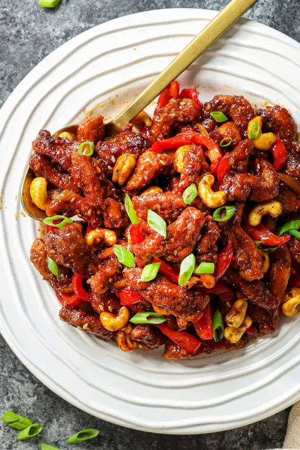

Dragon chicken made restaurant style in which chicken is fried till crispy
and tossed in spicy sauce with dry red chillies and cashews. This dish is
a family favorite just like my schezwan chicken. Learn how to make dragon
chicken with step by step pictures
Ingredients
- Chicken
- Sauces
- Cashews
- Dry Red Chilli
- Onions and Capsicum
Steps
-
Marinating & Frying Chicken - Take chicken in a bowl and add all
the marination ingredients. Mix well and let it marinate for 15 mins.
Now heat some oil for deep frying. When the oil is hot drop the chicken
in oil and fry till golden. Drain and set aside.
-
Making Sauce - Now heat oil in a frying pan. Add in dry red
chilli and cashews and fry till the cashew turn golden brown. Now add in
onions and bell peppers and toss well in the oil. Add in ginger garlic
paste, red chilli paste, soy sauce, tomato ketchup, salt, ajinomoto,
sugar and mix well. Cook this for a couple of mins till the water
evaporates and sauce thickens.
HOME